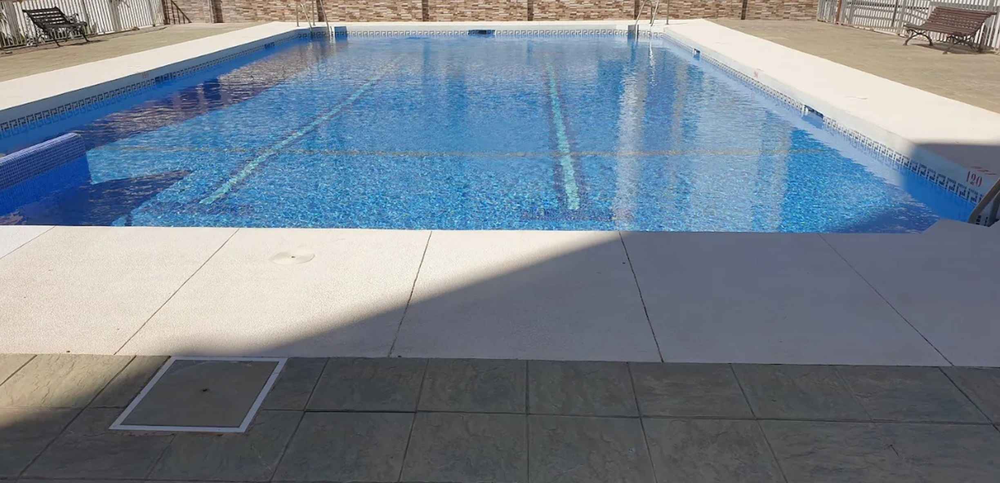

Bienvenidos al Apartamento Turístico Estrella del Mar
Ubicación privilegiada
Apartamento muy bien ubicado, a 5 min del Faro de Torre del Mar y totalmente equipado. Con piscina, muy cerca de la playa a 5 min a pié y rodeados de todos los comercios y servivios esenciales.
Comodidades del apartamento
- 1 dormitorio-salón con cama de matrimonio y sofá cama.
- Armarios zapatero.
- Baño completo con ducha.
- Orientación este y sol de mañana.
- Cocina independiente totalmente equipada.
- Smart-TV, WiFi, aire acondicionado/calefacción.
- Lavadora y termo eléctrico.
- Dispone de Licencia turistica.

Zona de piscinas
Amplia piscina comunitaria para adultos y niños, abierta desde mediados de Junio a mediados de Septiembre y dentro de un recinto privado.

Entorno y servicios cercanos
- A 150 metros de la playa (menos de 5 minutos a pie).
- A 450 metros del centro (Paseo Larios).
- Cerca de tiendas, restaurantes, bares, supermercados, farmacias, bazares, bancos, estacion de autobuses y parada de taxi, instalaciones deportivas y mucho más.
Actividades y ocio
- Lectura en la biblioteca municipal a 2 min a pie.
- Biblioplaya con libros y juegos a 10 min andando.
- Zonas deportivas municipales junto a la playa.
Información adicional
- Capacidad máxima: 4 personas en verano.
- Ideal para parejas fuera de la temporada estival.
- No se admiten mascotas.
- No se permite fumar.
- No se alquila por larga temporada ni durante el curso escolar.
Para más información consulta nuestras reseñas y disponibilidad en Airbnb y Vrbo. Tambien puedes consultar oferta de nuestro segundo apartamento turístico, accediendo al enlace de la foto, ubicado en la misma zona.También puedes contactar por WhatsApp o email para cualquier duda.


¡¡Torre del Mar todo el año, ven y disfruta!!